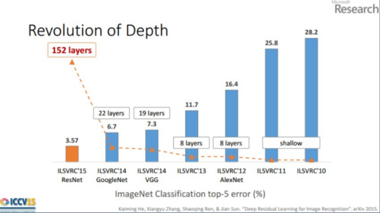
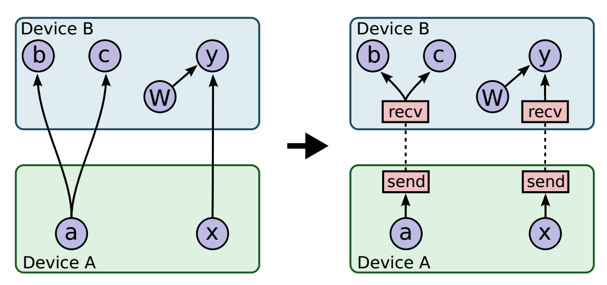
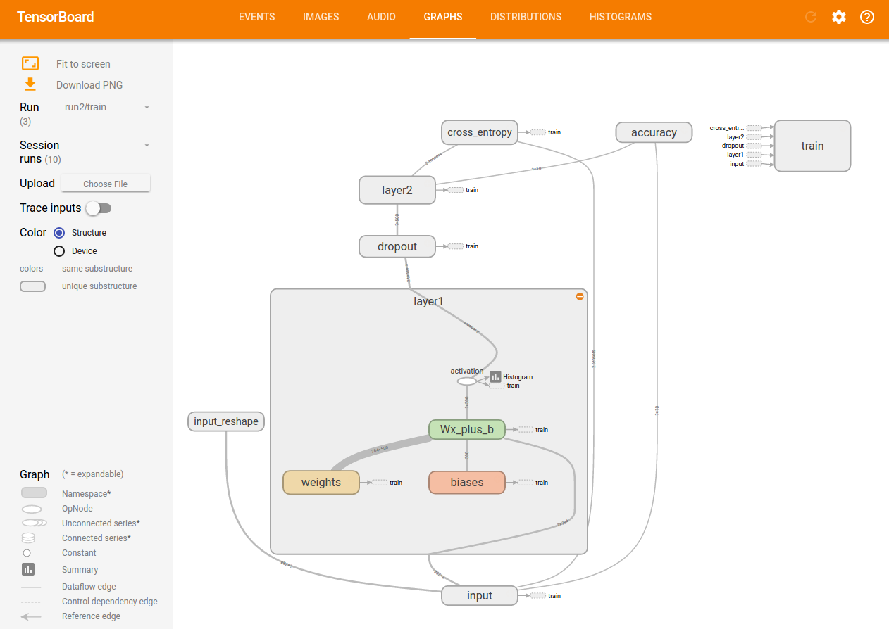
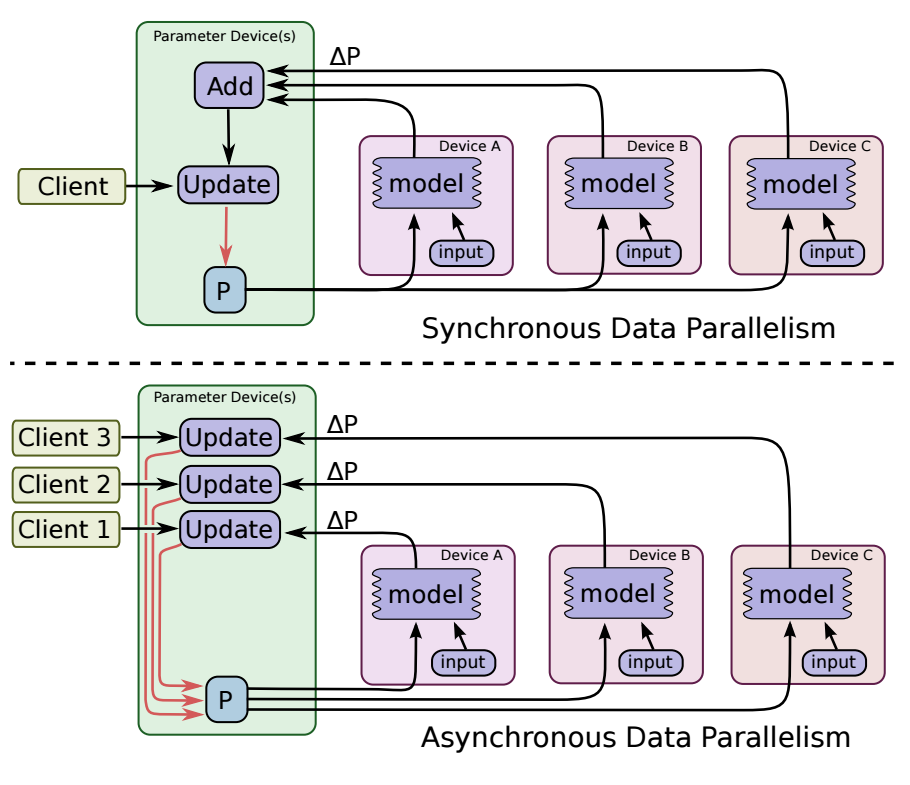
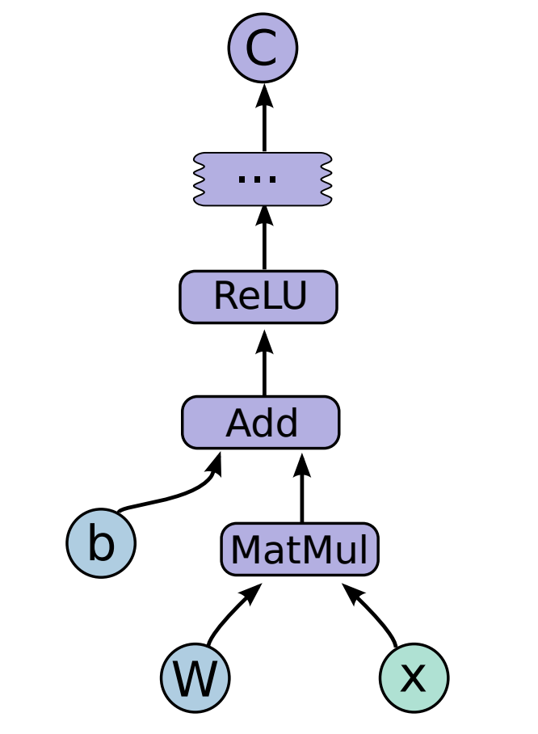
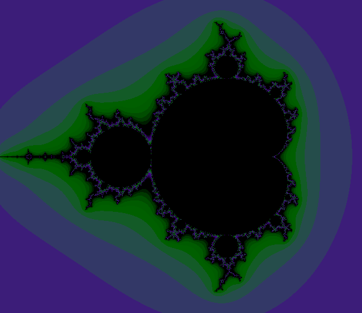
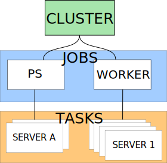

Tensorflow
Tensorflow
November 2016

|
Jesús Ojeda |
| @depthtest |
Table of Contents
- Context
- Architecture
- Programming model
- Hands-on
- Setup
- Exempli gratia
Context
- Project from Google Brain, starting as far as 2011.
- Successor to DistBelief
- Use deep-learning at "Google" scale
- Used initially on speech recognition, now deployed to: Search, Translate, StreetView, Youtube, ...
- Representing computations as directed graphs, nodes as operations.

Why DeepLearning now?
- McCulloch and Pitts of artificial neuron dates back to 1943.
- Phases:
- cybernetics (40s-60s) [perceptron, SGD...]
- connectionism (80s-90s) [neocognitron, distributed representation, back-propagation...]
- deep learning (2006-today) [deep belief network...]
- Now, we've got the touch, we've got the power
- Computational resources, CUDA, ...
- Neural Nets as Lego
- Massive datasets - Big data...
- Rapid evolution
Skynet is coming...


And you get a framework, and you get a framework...
Specialized Hardware
- Almost every framework has support for CUDA, Nvidia also creates the DGX-1.
- Google develops the Tensor Processing Unit (ASIC).
- Qualcomm has the Neural Processing Unit for mobile.
- Intel acquires Altera (FPGA), Nervana (cloud) and Movidius (SOC).
- Intel unveils Deep Learning Inference Accelerator.
- Intel adds "AI" instructions to x86 (Xeon & Xeon Phi) (just some more instructions to AVX-512)
So, we were to talk about...
Tensorflow
Architecture

Single-Device
Node execution order respects dependencies.
Using queues and satisfied dependency counters.
Multi-Device
Static scheduler on simulated execution: Node placement on device based on heuristics such as size of tensors, computation estimation, communication costs...
Graph is partitioned into set of subgraphs, one per device. Cross-device communication adds new nodes automatically. 
Distributed Execution
Same as in Multi-Device, one level higher (using TCP or RDMA across machines)
Fault tolerance:
- Comm error in Send/Recv.
- Periodic checks from master process.
If failure detected, then the whole graph execution is aborted and restarted from scratch.




Programming model
- Directed graph
- Nodes are operations
- Values flowing along edges are tensors
- Additional special edges for dependency control

ATTN! Operations are abstract. Their implementation is done in kernels, one for each particular device.
Operations
| Category | Examples |
|---|---|
| Element-wise mathematical operations | Add, Sub, Mul, Div, Exp, Log, Greater, Less, Equal... |
| Array operations | Concat, Slice, Split, Constant, Rank, Shape, Shuffle... |
| Matrix operations | MatMul, MatrixInverse, MatrixDeterminant... |
| Stateful operations | Variable, Assign, AssignAdd... |
| Neural-net building blocks | SoftMax, Sigmoid, ReLU, Convolution2D, MaxPool... |
| Checkpointing operations | Save, Restore |
| Queue and synchronization operations | Enqueue, Dequeue, MutexAcquire, MutexRelease... |
| Control flow operations | Merge, Switch, Enter, Leave, NextIteration |
Whetting the appetite
import tensorflow as tf
b = tf.Variable(tf.zeros([100]))
W = tf.Variable(tf.random_uniform([784,100],-1,1))
x = tf.placeholder(name="x")
relu = tf.nn.relu(tf.matmul(W, x) + b)
C = [...] # Cost computed as a function of Relu
s = tf.Session()
for step in xrange(0, 10):
input = ... construct 100-D input array ...
result = s.run(C, feed_dict={x: input})
print step, result
Setup
- Pip install
- VirtualEnv
- Anaconda
# Ubuntu/Linux 64-bit, GPU enabled, Python 2.7
# Requires CUDA toolkit 8.0 and CuDNN v5. For other versions, see "Install from sources" below.
$ export TF_BINARY_URL=https://storage.googleapis.com/tensorflow/linux/gpu/tensorflow-0.11.0rc2-cp27-none-linux_x86_64.whl
$ sudo pip install --upgrade $TF_BINARY_URL
Setup (more alternatives)
and now for something completely different
Mandelbrot set
(a.k.a. Obligatory non-machine learning example)
$$ z_{n+1} = z_n^2 + c$$ $$ c \in M \iff \limsup_{n \to \infty}|z_{n+1}| \leq 2$$ 
# Import libraries for simulation
import tensorflow as tf
import numpy as np
# Imports for visualization
import PIL.Image
from cStringIO import StringIO
sess = tf.Session()
# Use NumPy to create a 2D array of complex numbers
Y, X = np.mgrid[-1.3:1.3:0.005, -2:1:0.005]
Z = X+1j*Y
xs = tf.constant(Z.astype("complex64"))
zs = tf.Variable(xs)
ns = tf.Variable(tf.zeros_like(xs, "float32"))
sess.run(tf.initialize_all_variables())
# Compute the new values of z: z^2 + x
zs_ = zs*zs + xs
# Have we diverged with this new value?
not_diverged = tf.complex_abs(zs_) < 2
# Operation to update the zs and the iteration count.
step = tf.group(
zs.assign(zs_),
ns.assign_add(tf.cast(not_diverged, "float32"))
)
for i in range(200): sess.run(step)
a = ns.eval(sess)
#Save an array of iteration counts as acolorful picture of a fractal.
a_cyclic = (6.28*a/20.0).reshape(list(a.shape)+[1])
img = np.concatenate([64*np.cos(a_cyclic),
96*np.sin(a_cyclic),
128*np.cos(a_cyclic)], 2)
img[a==a.max()] = 0
a = img
a = np.uint8(np.clip(a, 0, 255))
PIL.Image.fromarray(a).save("mandel.png", 'png')
(in)Famous MNIST
"the drosophila of machine learning" (Geoffrey Hinton)
4-layer full connected with dropout
def train(data):
#Input placeholders #######################################################
X = tf.placeholder(tf.float32, [None, 784], name="x-input")
Y = tf.placeholder(tf.float32, [None, 10], name="y-input")
keep_prob = tf.placeholder(tf.float32)
#Variables ################################################################
Lay1 = 500
Lay2 = 200
Lay3 = 60
w1 = tf.Variable(tf.truncated_normal(shape=[784, Lay1], stddev=0.1), name="weights1")
b1 = tf.Variable(tf.zeros([Lay1]), name="bias1")
w2 = tf.Variable(tf.truncated_normal(shape=[Lay1, Lay2], stddev=0.1), name="weights2")
b2 = tf.Variable(tf.zeros([Lay2]), name="bias2")
w3 = tf.Variable(tf.truncated_normal(shape=[Lay2, Lay3], stddev=0.1), name="weights3")
b3 = tf.Variable(tf.zeros([Lay3]), name="bias3")
w4 = tf.Variable(tf.truncated_normal(shape=[Lay3, 10], stddev=0.1), name="weights4")
b4 = tf.Variable(tf.zeros([10]), name="bias4")
#Model ####################################################################
with tf.name_scope("layer1"):
Y1 = tf.nn.relu(tf.matmul(X, w1) + b1)
with tf.name_scope("dropout1"):
dropped1 = tf.nn.dropout(Y1, keep_prob)
with tf.name_scope("layer2"):
Y2 = tf.nn.relu(tf.matmul(dropped1, w2) + b2)
with tf.name_scope("dropout2"):
dropped2 = tf.nn.dropout(Y2, keep_prob)
with tf.name_scope("layer3"):
Y3 = tf.nn.relu(tf.matmul(dropped2, w3) + b3)
with tf.name_scope("dropout3"):
dropped3 = tf.nn.dropout(Y3, keep_prob)
with tf.name_scope("layer4"):
Y_logits = tf.matmul(dropped3, w4) + b4
Y_pred = tf.nn.softmax(Y_logits)
with tf.name_scope("loss"):
cross_entropy = tf.nn.softmax_cross_entropy_with_logits(Y_logits, Y)
loss = tf.reduce_mean(cross_entropy)*100
tf.scalar_summary("loss", loss)
with tf.name_scope("accuracy"):
correct_prediction = tf.equal(tf.argmax(Y_pred, 1), tf.argmax(Y, 1))
accuracy = tf.reduce_mean(tf.cast(correct_prediction, tf.float32))
tf.scalar_summary('accuracy', accuracy)
train_step = tf.train.GradientDescentOptimizer(FLAGS.learning_rate).minimize(loss)
def feed_dict(isTraining):
if isTraining:
xs, ys = data.train.next_batch(100)
k = FLAGS.dropout
else:
xs, ys = data.test.images, data.test.labels
k = 1.0
return {X:xs, Y:ys, keep_prob:k}
#Run ######################################################################
with tf.Session() as sess:
merged = tf.merge_all_summaries()
train_writer = tf.train.SummaryWriter(FLAGS.logdir +"/train", sess.graph)
test_writer = tf.train.SummaryWriter(FLAGS.logdir + '/test')
init = tf.initialize_all_variables()
sess.run(init)
for i in range(FLAGS.max_steps):
if i % 10 == 0:
summary, acc = sess.run([merged, accuracy], feed_dict=feed_dict(False))
test_writer.add_summary(summary, i)
print('Accuracy at step %s: %s' % (i, acc))
else :
summary, _ = sess.run([merged, train_step], feed_dict=feed_dict(True))
train_writer.add_summary(summary, i)
train_writer.close()
test_writer.close()
2-layer Conv2D + 2-layer full connected with dropout
def train(data):
#Input placeholders #######################################################
X = tf.placeholder(tf.float32, [None, 784], name="x-input")
Y = tf.placeholder(tf.float32, [None, 10], name="y-input")
keep_prob = tf.placeholder(tf.float32)
#Variables ################################################################
Lay1 = 512
Lay2 = 10 #num different labels
conv1_w = tf.Variable(tf.truncated_normal([5,5,1,32], stddev=0.1), name="conv1_weights")
conv1_b = tf.Variable(tf.constant(0.1, shape=[32]), name="conv1_bias")
conv2_w = tf.Variable(tf.truncated_normal([5,5,32,64], stddev=0.1), name="conv2_weights")
conv2_b = tf.Variable(tf.constant(0.1, shape=[64]), name="conv2_bias")
w1 = tf.Variable(tf.truncated_normal(shape=[ 7*7*64, Lay1], stddev=0.1), name="fc_weights1")
b1 = tf.Variable(tf.constant(0.1, shape=[Lay1]), name="fc_bias1")
w2 = tf.Variable(tf.truncated_normal(shape=[Lay1, Lay2], stddev=0.1), name="fc_weights2")
b2 = tf.Variable(tf.constant(0.1, shape=[Lay2]), name="fc_bias2")
#Model ####################################################################
#reshape input
x_img = tf.reshape(X, [-1, 28, 28, 1])
with tf.name_scope("conv1"):
C1 = tf.nn.relu(
tf.nn.conv2d(x_img, conv1_w, strides=[1,1,1,1], padding="SAME") + conv1_b)
P1 = tf.nn.max_pool(C1, ksize=[1,2,2,1], strides=[1,2,2,1], padding="SAME")
with tf.name_scope("conv2"):
C2 = tf.nn.relu(
tf.nn.conv2d(P1, conv2_w, strides=[1,1,1,1], padding="SAME") + conv2_b)
P2 = tf.nn.max_pool(C2, ksize=[1,2,2,1], strides=[1,2,2,1], padding="SAME")
reshape = tf.reshape(P2, shape=[-1, w1.get_shape().as_list()[0]])
with tf.name_scope("fc1"):
H = tf.nn.relu(tf.matmul(reshape, w1) + b1)
with tf.name_scope("dropout"):
dropped = tf.nn.dropout(H, keep_prob)
with tf.name_scope("fc2"):
Y_logits = tf.matmul(dropped, w2) + b2
Y_pred = tf.nn.softmax(Y_logits)
with tf.name_scope("loss"):
cross_entropy = tf.nn.softmax_cross_entropy_with_logits(Y_logits, Y)
loss = tf.reduce_mean(cross_entropy)
tf.scalar_summary("loss", loss)
with tf.name_scope("accuracy"):
correct_prediction = tf.equal(tf.argmax(Y_pred, 1), tf.argmax(Y, 1))
accuracy = tf.reduce_mean(tf.cast(correct_prediction, tf.float32))
tf.scalar_summary('accuracy', accuracy)
train_step = tf.train.GradientDescentOptimizer(FLAGS.learning_rate).minimize(loss)
def feed_dict(isTraining):
if isTraining:
xs, ys = data.train.next_batch(64)
k = FLAGS.dropout
else:
xs, ys = data.test.next_batch(64)
k = 1.0
return {X:xs, Y:ys, keep_prob:k}
#Run ######################################################################
with tf.Session() as sess:
merged = tf.merge_all_summaries()
train_writer = tf.train.SummaryWriter(FLAGS.logdir+"/train", sess.graph)
test_writer = tf.train.SummaryWriter(FLAGS.logdir + '/test')
init = tf.initialize_all_variables()
sess.run(init)
for i in range(FLAGS.max_steps):
if i % 10 == 0:
summary, acc = sess.run([merged, accuracy], feed_dict=feed_dict(False))
test_writer.add_summary(summary, i)
print('Accuracy at step %s: %s' % (i, acc))
else :
summary, _ = sess.run([merged, train_step], feed_dict=feed_dict(True))
train_writer.add_summary(summary, i)
train_writer.close()
test_writer.close()
Placement
import tensorflow as tf
def func_auto(session):
# Creates a graph.
a = tf.constant([1.0, 2.0, 3.0, 4.0, 5.0, 6.0], shape=[2, 3], name='a_auto')
b = tf.constant([1.0, 2.0, 3.0, 4.0, 5.0, 6.0], shape=[3, 2], name='b_auto')
c = tf.matmul(a, b, name='MatMul_auto')
# Runs the op.
print session.run(c)
def func_manual(session, device):
# Creates a graph.
with tf.device("/"+device+":0"):
a = tf.constant([1.0, 2.0, 3.0, 4.0, 5.0, 6.0], shape=[2, 3], name='a_'+device)
b = tf.constant([1.0, 2.0, 3.0, 4.0, 5.0, 6.0], shape=[3, 2], name='b_'+device)
c = tf.matmul(a, b, name='MatMul_'+device)
# Runs the op.
print session.run(c)
if __name__ == "__main__":
print("----------------------------------auto placement")
sessA = tf.Session(config=tf.ConfigProto(log_device_placement=True))
func_auto(sessA)
sessA.close()
print("----------------------------------manual cpu placement")
sessB = tf.Session(config=tf.ConfigProto(log_device_placement=True))
func_manual(sessB, "cpu")
sessB.close()
print("----------------------------------manual gpu placement")
sessC = tf.Session(config=tf.ConfigProto(log_device_placement=True))
func_manual(sessC, "gpu")
sessC.close()
----------------------------------auto placement
Device mapping:
/job:localhost/replica:0/task:0/gpu:0 -> device: 0, name: GeForce GTX 780, pci bus id: 0000:02:00.0
MatMul_auto: /job:localhost/replica:0/task:0/gpu:0
b_auto: /job:localhost/replica:0/task:0/gpu:0
a_auto: /job:localhost/replica:0/task:0/gpu:0
[[ 22. 28.]
[ 49. 64.]]
----------------------------------manual cpu placement
Device mapping:
/job:localhost/replica:0/task:0/gpu:0 -> device: 0, name: GeForce GTX 780, pci bus id: 0000:02:00.0
MatMul_cpu: /job:localhost/replica:0/task:0/cpu:0
b_cpu: /job:localhost/replica:0/task:0/cpu:0
a_cpu: /job:localhost/replica:0/task:0/cpu:0
[[ 22. 28.]
[ 49. 64.]]
----------------------------------manual gpu placement
Device mapping:
/job:localhost/replica:0/task:0/gpu:0 -> device: 0, name: GeForce GTX 780, pci bus id: 0000:02:00.0
MatMul_gpu: /job:localhost/replica:0/task:0/gpu:0
b_gpu: /job:localhost/replica:0/task:0/gpu:0
a_gpu: /job:localhost/replica:0/task:0/gpu:0
[[ 22. 28.]
[ 49. 64.]]
Distributed execution

For each server:
- Where am I? Define ClusterSpec (dictionary of all jobs<->taks/server addresses)
- Who am I? Define which job and index in task
- Create Server
- Depending on job I have, do something or another...
def main(unused_args):
# Extract all the hostnames for the ps and worker jobs to construct the
# cluster spec.
ps_hosts = FLAGS.ps_hosts.split(',')
worker_hosts = FLAGS.worker_hosts.split(',')
tf.logging.info('PS hosts are: %s' % ps_hosts)
tf.logging.info('Worker hosts are: %s' % worker_hosts)
cluster_spec = tf.train.ClusterSpec({'ps': ps_hosts, 'worker': worker_hosts})
server = tf.train.Server(
{'ps': ps_hosts, 'worker': worker_hosts},
job_name=FLAGS.job_name,
task_index=FLAGS.task_id)
if FLAGS.job_name == 'ps':
# `ps` jobs wait for incoming connections from the workers.
server.join()
else:
# `worker` jobs will actually do the work.
dataset = ImagenetData(subset=FLAGS.subset)
assert dataset.data_files()
# Only the chief checks for or creates train_dir.
if FLAGS.task_id == 0:
if not tf.gfile.Exists(FLAGS.train_dir):
tf.gfile.MakeDirs(FLAGS.train_dir)
inception_distributed_train.train(server.target, dataset, cluster_spec)
def train(target, dataset, cluster_spec):
"""Train Inception on a dataset for a number of steps."""
# Number of workers and parameter servers are infered from the workers and ps hosts string.
num_workers = len(cluster_spec.as_dict()['worker'])
num_parameter_servers = len(cluster_spec.as_dict()['ps'])
# If no value is given, num_replicas_to_aggregate defaults to be the number of workers.
if FLAGS.num_replicas_to_aggregate == -1:
num_replicas_to_aggregate = num_workers
else:
num_replicas_to_aggregate = FLAGS.num_replicas_to_aggregate
# Both should be greater than 0 in a distributed training.
assert num_workers > 0 and num_parameter_servers > 0, (' num_workers and '
'num_parameter_servers'
' must be > 0.')
# Choose worker 0 as the chief. Note that any worker could be the chief
# but there should be only one chief.
is_chief = (FLAGS.task_id == 0)
# Ops are assigned to worker by default.
with tf.device('/job:worker/task:%d' % FLAGS.task_id):
# Variables and its related init/assign ops are assigned to ps.
with slim.scopes.arg_scope(
[slim.variables.variable, slim.variables.global_step],
device=slim.variables.VariableDeviceChooser(num_parameter_servers)):
# Create a variable to count the number of train() calls. This equals the
# number of updates applied to the variables.
global_step = slim.variables.global_step()
# Calculate the learning rate schedule.
num_batches_per_epoch = (dataset.num_examples_per_epoch() /
FLAGS.batch_size)
# Decay steps need to be divided by the number of replicas to aggregate.
decay_steps = int(num_batches_per_epoch * FLAGS.num_epochs_per_decay /
num_replicas_to_aggregate)
# Decay the learning rate exponentially based on the number of steps.
lr = tf.train.exponential_decay(FLAGS.initial_learning_rate,
global_step,
decay_steps,
FLAGS.learning_rate_decay_factor,
staircase=True)
# Add a summary to track the learning rate.
tf.scalar_summary('learning_rate', lr)
# Create an optimizer that performs gradient descent.
opt = tf.train.RMSPropOptimizer(lr,
RMSPROP_DECAY,
momentum=RMSPROP_MOMENTUM,
epsilon=RMSPROP_EPSILON)
images, labels = image_processing.distorted_inputs(
dataset,
batch_size=FLAGS.batch_size,
num_preprocess_threads=FLAGS.num_preprocess_threads)
# Number of classes in the Dataset label set plus 1.
# Label 0 is reserved for an (unused) background class.
num_classes = dataset.num_classes() + 1
logits = inception.inference(images, num_classes, for_training=True)
# Add classification loss.
inception.loss(logits, labels)
# Gather all of the losses including regularization losses.
losses = tf.get_collection(slim.losses.LOSSES_COLLECTION)
losses += tf.get_collection(tf.GraphKeys.REGULARIZATION_LOSSES)
total_loss = tf.add_n(losses, name='total_loss')
if is_chief:
# Compute the moving average of all individual losses and the
# total loss.
loss_averages = tf.train.ExponentialMovingAverage(0.9, name='avg')
loss_averages_op = loss_averages.apply(losses + [total_loss])
# Attach a scalar summmary to all individual losses and the total loss;
# do the same for the averaged version of the losses.
for l in losses + [total_loss]:
loss_name = l.op.name
# Name each loss as '(raw)' and name the moving average version of the
# loss as the original loss name.
tf.scalar_summary(loss_name + ' (raw)', l)
tf.scalar_summary(loss_name, loss_averages.average(l))
# Add dependency to compute loss_averages.
with tf.control_dependencies([loss_averages_op]):
total_loss = tf.identity(total_loss)
# Track the moving averages of all trainable variables.
# Note that we maintain a 'double-average' of the BatchNormalization
# global statistics.
# This is not needed when the number of replicas are small but important
# for synchronous distributed training with tens of workers/replicas.
exp_moving_averager = tf.train.ExponentialMovingAverage(
inception.MOVING_AVERAGE_DECAY, global_step)
variables_to_average = (
tf.trainable_variables() + tf.moving_average_variables())
# Add histograms for model variables.
for var in variables_to_average:
tf.histogram_summary(var.op.name, var)
# Create synchronous replica optimizer.
opt = tf.train.SyncReplicasOptimizer(
opt,
replicas_to_aggregate=num_replicas_to_aggregate,
replica_id=FLAGS.task_id,
total_num_replicas=num_workers,
variable_averages=exp_moving_averager,
variables_to_average=variables_to_average)
batchnorm_updates = tf.get_collection(slim.ops.UPDATE_OPS_COLLECTION)
assert batchnorm_updates, 'Batchnorm updates are missing'
batchnorm_updates_op = tf.group(*batchnorm_updates)
# Add dependency to compute batchnorm_updates.
with tf.control_dependencies([batchnorm_updates_op]):
total_loss = tf.identity(total_loss)
# Compute gradients with respect to the loss.
grads = opt.compute_gradients(total_loss)
# Add histograms for gradients.
for grad, var in grads:
if grad is not None:
tf.histogram_summary(var.op.name + '/gradients', grad)
apply_gradients_op = opt.apply_gradients(grads, global_step=global_step)
with tf.control_dependencies([apply_gradients_op]):
train_op = tf.identity(total_loss, name='train_op')
# Get chief queue_runners, init_tokens and clean_up_op, which is used to
# synchronize replicas.
# More details can be found in sync_replicas_optimizer.
chief_queue_runners = [opt.get_chief_queue_runner()]
init_tokens_op = opt.get_init_tokens_op()
clean_up_op = opt.get_clean_up_op()
# Create a saver.
saver = tf.train.Saver()
# Build the summary operation based on the TF collection of Summaries.
summary_op = tf.merge_all_summaries()
# Build an initialization operation to run below.
init_op = tf.initialize_all_variables()
# We run the summaries in the same thread as the training operations by
# passing in None for summary_op to avoid a summary_thread being started.
# Running summaries and training operations in parallel could run out of
# GPU memory.
sv = tf.train.Supervisor(is_chief=is_chief,
logdir=FLAGS.train_dir,
init_op=init_op,
summary_op=None,
global_step=global_step,
saver=saver,
save_model_secs=FLAGS.save_interval_secs)
tf.logging.info('%s Supervisor' % datetime.now())
sess_config = tf.ConfigProto(
allow_soft_placement=True,
log_device_placement=FLAGS.log_device_placement)
# Get a session.
sess = sv.prepare_or_wait_for_session(target, config=sess_config)
# Start the queue runners.
queue_runners = tf.get_collection(tf.GraphKeys.QUEUE_RUNNERS)
sv.start_queue_runners(sess, queue_runners)
tf.logging.info('Started %d queues for processing input data.',
len(queue_runners))
if is_chief:
sv.start_queue_runners(sess, chief_queue_runners)
sess.run(init_tokens_op)
# Train, checking for Nans. Concurrently run the summary operation at a
# specified interval. Note that the summary_op and train_op never run
# simultaneously in order to prevent running out of GPU memory.
next_summary_time = time.time() + FLAGS.save_summaries_secs
while not sv.should_stop():
try:
start_time = time.time()
loss_value, step = sess.run([train_op, global_step])
assert not np.isnan(loss_value), 'Model diverged with loss = NaN'
if step > FLAGS.max_steps:
break
duration = time.time() - start_time
if step % 30 == 0:
examples_per_sec = FLAGS.batch_size / float(duration)
format_str = ('Worker %d: %s: step %d, loss = %.2f'
'(%.1f examples/sec; %.3f sec/batch)')
tf.logging.info(format_str %
(FLAGS.task_id, datetime.now(), step, loss_value,
examples_per_sec, duration))
# Determine if the summary_op should be run on the chief worker.
if is_chief and next_summary_time < time.time():
tf.logging.info('Running Summary operation on the chief.')
summary_str = sess.run(summary_op)
sv.summary_computed(sess, summary_str)
tf.logging.info('Finished running Summary operation.')
# Determine the next time for running the summary.
next_summary_time += FLAGS.save_summaries_secs
except:
if is_chief:
tf.logging.info('About to execute sync_clean_up_op!')
sess.run(clean_up_op)
raise
# Stop the supervisor. This also waits for service threads to finish.
sv.stop()
# Save after the training ends.
if is_chief:
saver.save(sess,
os.path.join(FLAGS.train_dir, 'model.ckpt'),
global_step=global_step)
Replicated training
Graph replication
- In-graph replication. The client builds a single tf.Graph that contains one set of parameters (in tf.Variable nodes pinned to /job:ps); and multiple copies of the compute-intensive part of the model, each pinned to a different task in /job:worker.
- Between-graph replication. There is a separate client for each /job:worker task, typically in the same process as the worker task. Each client builds a similar graph containing the parameters (pinned to /job:ps as before using tf.train.replica_device_setter() to map them deterministically to the same tasks); and a single copy of the compute-intensive part of the model, pinned to the local task in /job:worker.
Training
- Asynchronous training. Each replica of the graph has an independent training loop that executes without coordination.
- Synchronous training. All of the replicas read the same values for the current parameters, compute gradients in parallel, and then apply them together.
To production:
- Use a tf.traing.Saver to serialize the trained parameters
- Replicate the model (without loss function), load the parameters and execute as usual
or...